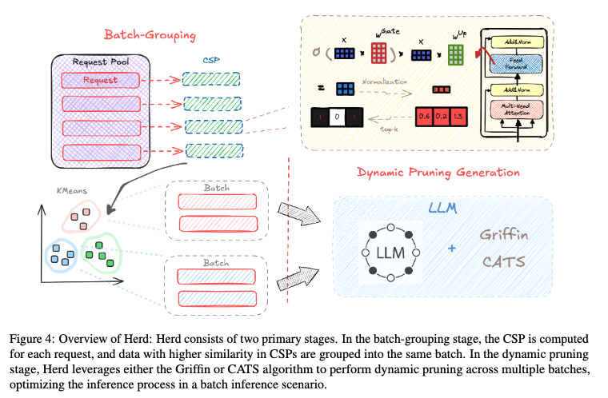
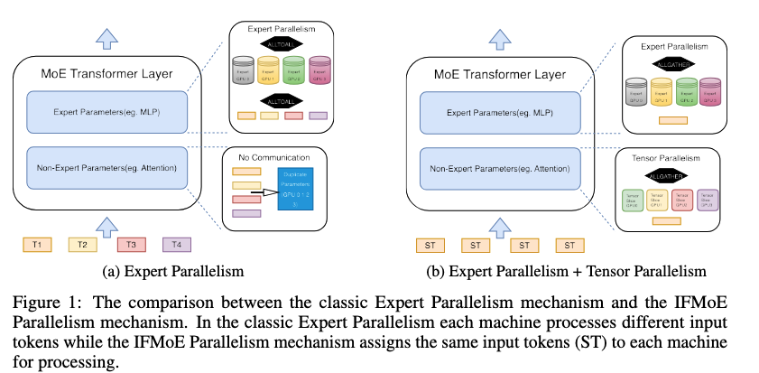
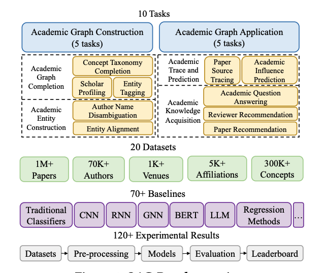
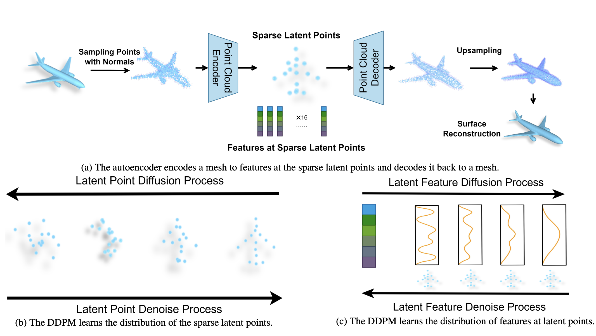

|
Yuwei An I'm a master student majoring Electrical and Computer Engineering at Carnegie Mellon University . Previously I got my Bachelor's Degree at Department of Computer Science and Technonlogy, Tsinghua University. Currently, I am a Research Intern, working with Professor Beidi Chen. Previously, I was fortunate to work with Jie Tang at THU and Bo Dai at AILab@Shanghai.
|

|
ResearchMy primary research interest lies in Machine Learning Systems (MLSys), with a focus on developing efficient and scalable systems for model inference and training. On the algorithmic side, my research emphasizes sparsity and quantization techniques to optimize model inference effeciency. On the system side, I am particularly interested in designing robust pipeline services to support the deployment of popular ML algorithms effectively. |
Publications |
|  |
Herd: Grouping before Pruning for Batch Inference
Yuwei An, Zhuoming Chen, Chenyan Xiong, Beidi Chen Preprint paper |
|  |
IFMoE: An Inference Framework Design for Fine-grained MoE
Yuwei An, Zhuoming Chen, Beidi Chen NeurIPS 2024 MLSys Workshop paper |
|  |
OAG-Bench: A Human-Curated Benchmark for Academic Graph Mining
Fanjin Zhang, Shijie Shi, Yifan Zhu, Bo Chen, Yukuo Cen, Jifan Yu, Yelin Chen, Lulu Wang, Qingfei Zhao, Yuqing Cheng, Tianyi Han, Yuwei An, Dan Zhang, Weng Lam Tam, Kun Cao, Yunhe Pang, Xinyu Guan, Huihui Yuan, Jian Song, Xiaoyan Li, Yuxiao Dong, and Jie Tang KDD 2024 paper code |
|  |
Controllable Mesh Generation Through Sparse Latent Point Diffusion Models
Zhaoyang Lyu, Jinyi Wang, Yuwei An, Ya Zhang, Dahua Lin, Bo Dai CVPR 2023 paper |
Projects |
|
LMCache
website LMCache is a LLM serving engine extension to reduce TTFT and increase throughput, especially under long-context scenarios. By storing the KV caches of reusable texts across various locations including (GPU, CPU DRAM, Local Disk), LMCache reuse the KV caches of any reused text (not necessarily prefix) in any serving engine instance |
Teaching |
|
CMU 18789: Deep Generative Modeling
website TA for 18-789 Deep Generative Modeling in Spring 2025. Instructor: Beidi Chen |
|
This is the source code from Jon Barron. Thanks to him for sharing this beautiful template! |